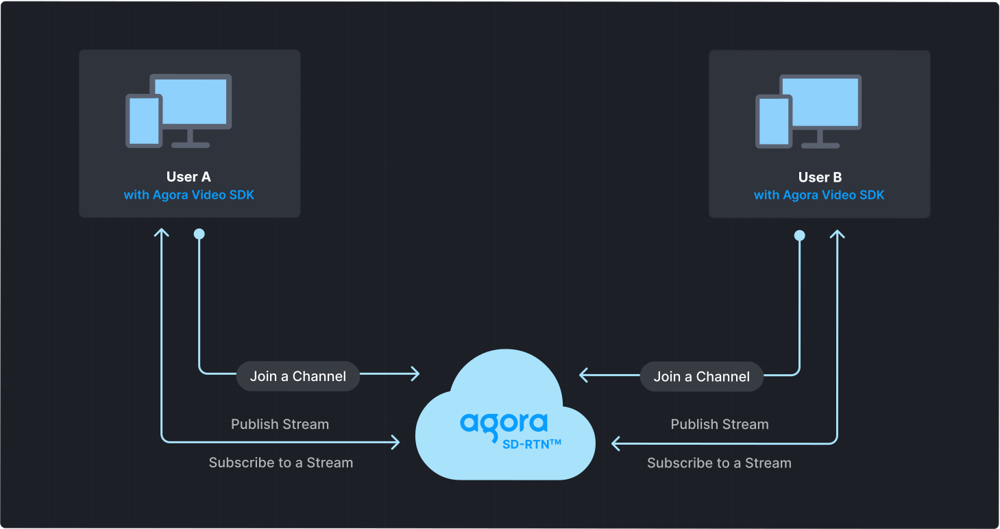
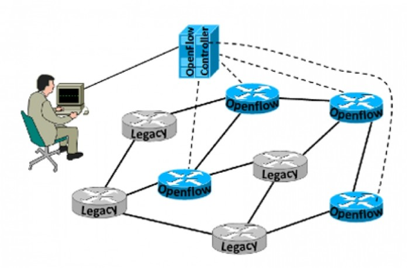

Agora.io est une entreprise technologique qui fournit une plateforme d'engagement en temps réel (RTE) en tant que service (PaaS). Cela signifie qu'elle offre aux développeurs les outils (SDKs et APIs) nécessaires pour intégrer facilement des fonctionnalités de communication audio et vidéo en temps réel, ainsi que d'autres interactions en direct, dans leurs propres applications mobiles, web ou de bureau.
Le cœur de l'offre d'Agora est son réseau mondial propriétaire appelé SD-RTN. Ce réseau est spécialement conçu pour le transport de données en temps réel avec une faible latence, une haute fiabilité et une qualité optimale, même dans des conditions de réseau variables. Le SD-RTN est distribué mondialement avec des centres de données pour minimiser la distance entre les utilisateurs et assurer une expérience fluide.
La technologie d'Agora est utilisée dans une variété d'industries et pour de nombreux cas d'utilisation, notamment :
Agora fonctionne généralement sur un modèle de tarification basé sur l'utilisation. Les coûts sont souvent calculés en fonction du nombre de minutes d'audio et de vidéo utilisées, ainsi que des fonctionnalités supplémentaires utilisées (comme la diffusion en direct à grande échelle).
Agora est en concurrence avec d'autres fournisseurs de solutions de communication en temps réel, notamment :
Fondée en 2014, Agora a connu une croissance significative, en particulier avec l'augmentation de la demande pour les communications en temps réel. L'entreprise est devenue publique en 2020. Il est important de noter que l'entreprise a récemment simplifié son nom commercial de Agora.io à Agora.
Pour rester informé des dernières actualités et développements d'Agora, vous pouvez consulter :
En résumé, Agora est un acteur majeur dans le domaine des plateformes d'engagement en temps réel, offrant une infrastructure robuste et des outils faciles à utiliser pour intégrer des communications en direct de haute qualité dans diverses applications. Sa technologie est essentielle pour de nombreuses applications que nous utilisons quotidiennement, même si nous n'en sommes pas toujours conscients.